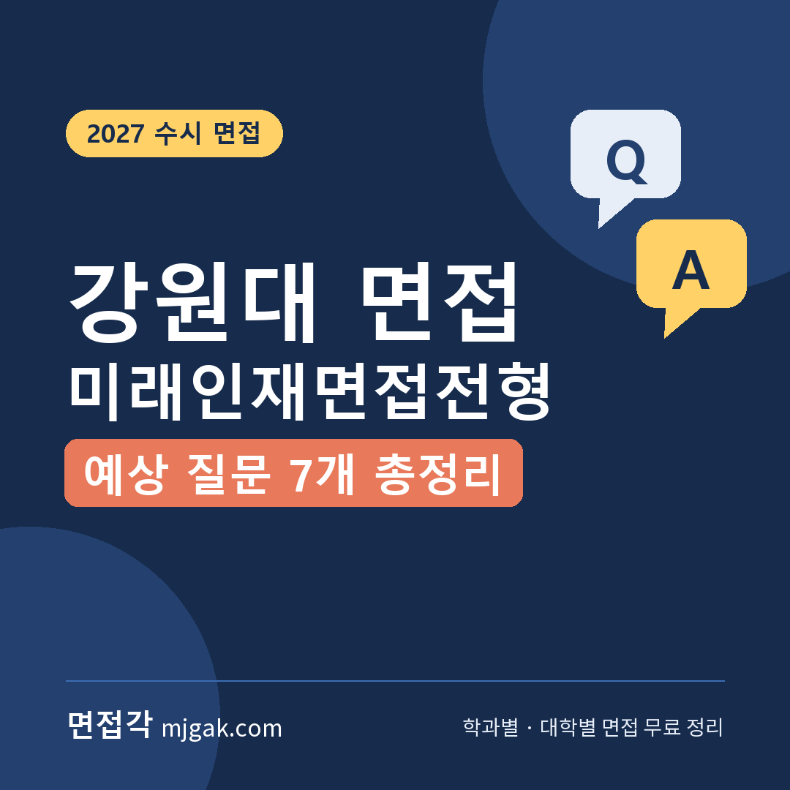
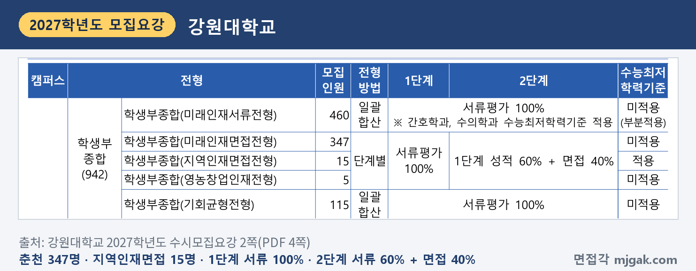
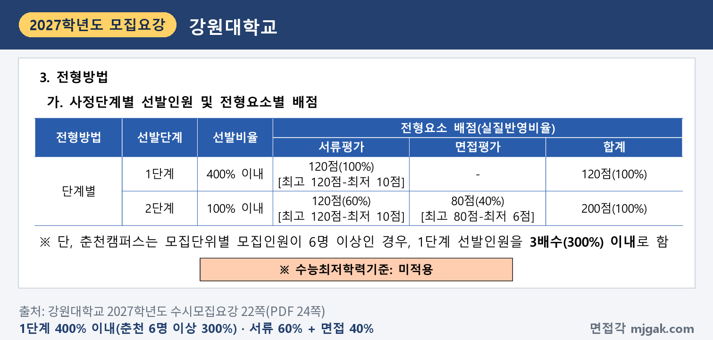
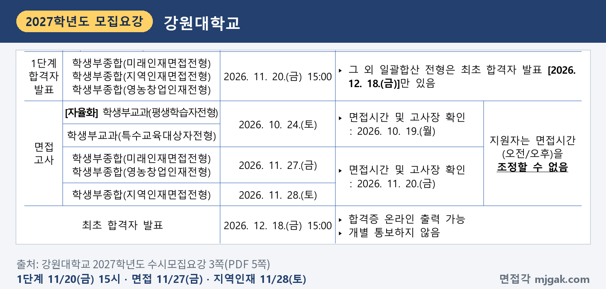
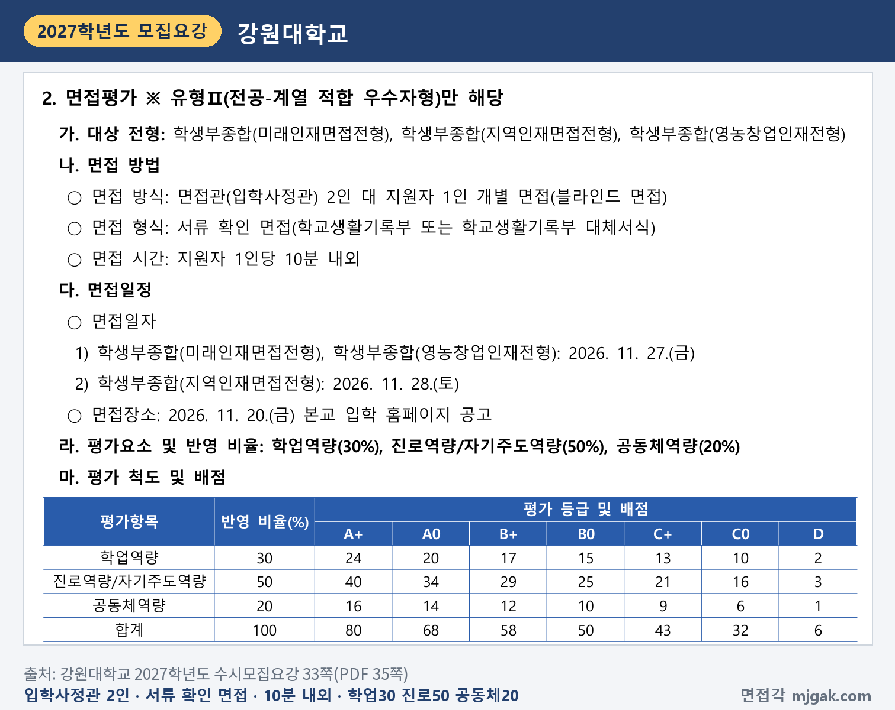
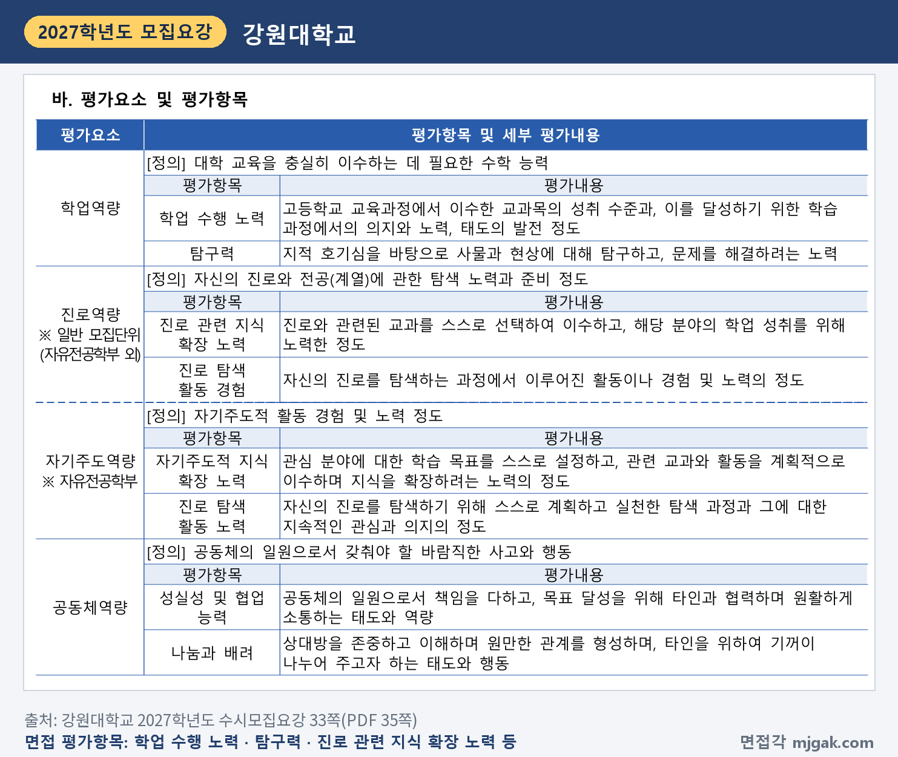
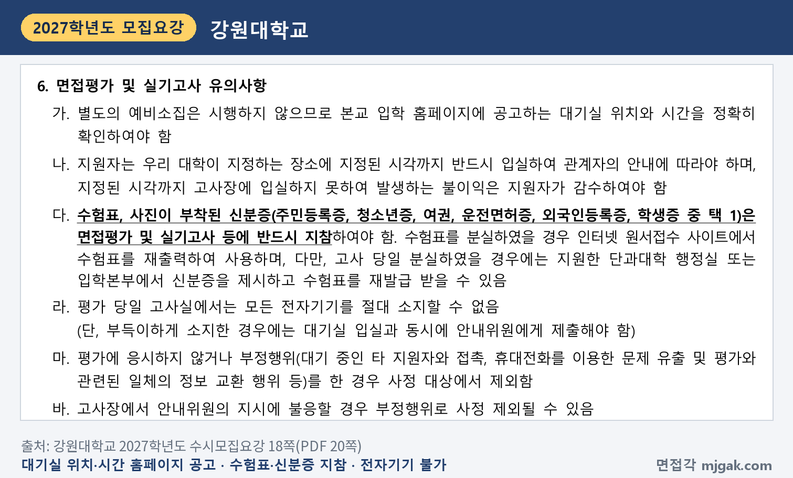
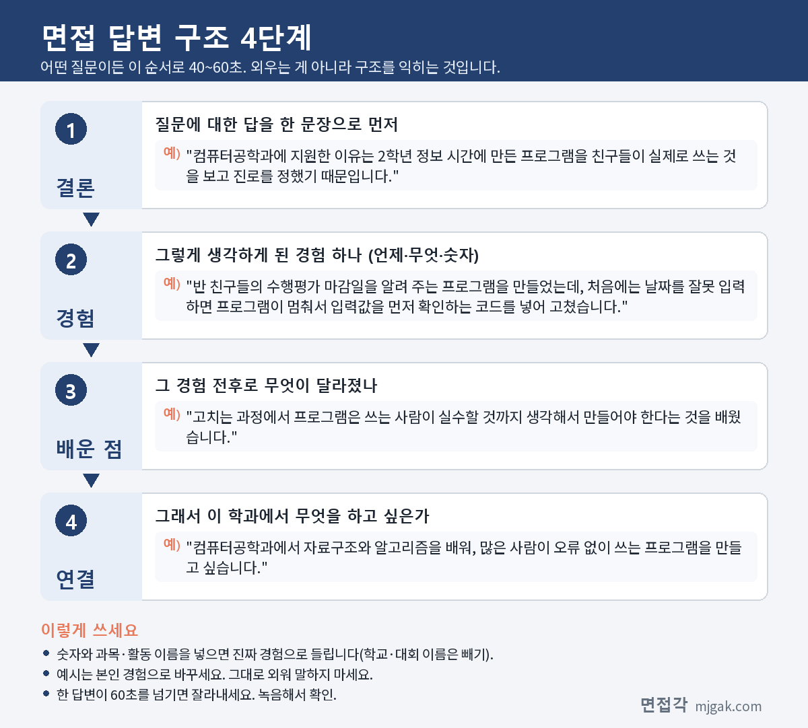
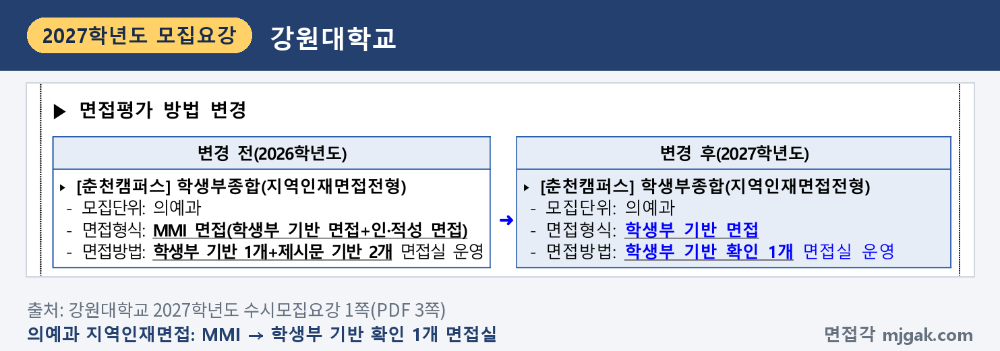

Ctrl+V (서식 유지됨)제목
본문 (이 영역 전체가 복사됩니다)
📷 여기에 이미지 넣기 — 썸네일 — thumb-kwnu.png (대표 이미지로 지정)
강원대 미래인재면접전형에서 먼저 챙길 것은 날짜입니다. 수능은 11월 19일(목), 1단계 합격자 발표는 11월 20일(금) 15시, 면접은 11월 27일(금)입니다. 2단계는 서류평가 60%와 면접평가 40%를 합산하고, 면접은 입학사정관 2명이 학교생활기록부를 확인하는 10분 내외 블라인드 면접입니다. 수능최저학력기준은 없습니다. 강원대학교 2027학년도 수시모집요강으로 전형 방법, 일정, 면접 방식, 예상 질문 7개를 정리했습니다. 춘천캠퍼스·도계캠퍼스 모집단위에 미래인재면접전형으로 지원한 고3과 재수생이 읽으시면 됩니다.
1. 미래인재면접전형, 2027학년도에는 어떻게 보나
미래인재면접전형은 학생부종합전형으로 춘천캠퍼스 347명, 삼척(도계포함)캠퍼스 43명을 뽑습니다(2쪽). 합치면 390명입니다(이 글에서 계산한 값). 국내 고등학교 졸업(예정)자와 검정고시 출신자가 지원할 수 있습니다(22쪽).
📷 여기에 이미지 넣기 — 캡처 1 — 강원대학교 2027학년도 수시모집요강 2쪽(PDF 4쪽): kwnu-2027-summary.png
춘천캠퍼스에서 인원이 많은 곳은 경영·회계학부 20명, 컴퓨터공학과 16명, 과학교육학부 15명, 전기전자공학과 10명이고, 경제·정보통계학부·국어교육과·수학교육과·약학과·화학·생화학부가 각 9명입니다. 의예과도 5명을 뽑습니다. 심리학과·수의학과·부동산학과·가정교육과·지리교육과·스마트팜농산업학과, 단과대학별 자유전공학과, 예체능 학과는 이 전형 모집인원이 없습니다(6·7쪽). 글로벌미래융합대학 자유전공학부는 인문·자연계열 각 5명을 뽑습니다(7쪽).
삼척(도계포함)캠퍼스 43명은 모두 도계캠퍼스 모집단위입니다. 간호학과 10명, 물리치료학과 8명, 방사선학과·응급구조학과 각 6명, 사회복지학과·치위생학과 각 4명, 작업치료학과 3명, 유아교육과 2명이고, 삼척캠퍼스 모집단위에는 이 전형 인원이 없습니다(8쪽).
전형 방법은 1단계에서 서류평가 100%(120점)로 모집인원의 400% 이내를 뽑고, 2단계에서 서류평가 120점(60%)과 면접평가 80점(40%)을 합산합니다. 단, 춘천캠퍼스는 모집인원이 6명 이상인 모집단위의 1단계 선발인원을 3배수(300%) 이내로 합니다(22쪽). 이 글에서 계산하면 1단계 인원은 경영·회계학부(20명) 60명 이내, 의예과(5명) 20명 이내, 도계 간호학과(10명) 40명 이내입니다. 1단계 1순위 동점자는 모두 선발하고, 2단계 동점자는 서류평가 총점, 면접평가 총점 순으로 먼저 가립니다(22쪽).
📷 여기에 이미지 넣기 — 캡처 2 — 강원대학교 2027학년도 수시모집요강 22쪽(PDF 24쪽): kwnu-2027-method.png
서류평가는 입학사정관 2인이 학교생활기록부(또는 대체서식)를 종합적·정성적으로 평가하는 블라인드 평가이고, 학업역량 30%, 진로역량 50%(자유전공학부는 자기주도역량), 공동체역량 20%를 반영합니다(31쪽). 학교폭력 조치사항은 서류평가에 반영하고, 4호 이상은 공동체역량 등급을 감점합니다(81쪽). 학업능력이 대학 수학에 현저하게 부족하다고 최종 판정되면 사정대상에서 제외할 수 있습니다(31쪽).
2. 언제 보나: 11월 20일(금) 15시 1단계 발표, 11월 27일(금) 면접
일정은 날짜순으로 이렇습니다(3·14쪽).
- 11월 19일(목): 수능
- 11월 20일(금) 15:00: 1단계 합격자 발표(입학 홈페이지), 면접 고사장·면접시간 공고
- 11월 27일(금): 미래인재면접전형·영농창업인재전형 면접
- 11월 28일(토): 지역인재면접전형 면접
- 12월 18일(금) 15:00: 최초 합격자 발표
1단계 발표에서 면접까지는 7일입니다(이 글에서 계산한 값). 지원자는 면접시간(오전/오후)을 조정할 수 없고(3쪽), 합격자는 개별 통보하지 않으니 입학 홈페이지에서 직접 확인해야 합니다(14쪽).
면접장소는 11월 20일(금) 입학 홈페이지에 공고하고(33쪽), 별도의 예비소집 없이 홈페이지에 공고하는 대기실 위치와 시간을 확인해야 합니다(18쪽).
📷 여기에 이미지 넣기 — 캡처 3 — 강원대학교 2027학년도 수시모집요강 3쪽(PDF 5쪽): kwnu-2027-schedule.png
3. 면접은 어떻게 보나
면접은 면접관(입학사정관) 2인과 지원자 1인의 개별 블라인드 면접입니다. 형식은 학교생활기록부(또는 대체서식)를 확인하는 서류 확인 면접이고, 시간은 1인당 10분 내외입니다(33쪽).
평가요소와 반영비율은 다음과 같습니다(33쪽).
- 학업역량 30%: 학업 수행 노력, 탐구력
- 진로역량 50%: 진로 관련 지식 확장 노력, 진로 탐색 활동 경험(자유전공학부는 자기주도역량: 자기주도적 지식 확장 노력, 진로 탐색 활동 노력)
- 공동체역량 20%: 성실성 및 협업 능력, 나눔과 배려
면접은 80점 만점이고, 7등급으로 평가해 모두 A+이면 80점, 모두 D이면 6점입니다. 진로역량은 A+가 40점으로 80점의 절반입니다(33쪽, 절반은 이 글에서 계산한 값).
📷 여기에 이미지 넣기 — 캡처 4 — 강원대학교 2027학년도 수시모집요강 33쪽(PDF 35쪽): kwnu-2027-interview.png
평가항목마다 뜻이 모집요강에 적혀 있고, 아래 예상 질문은 이 정의에서 만들었습니다(33쪽).
📷 여기에 이미지 넣기 — 캡처 5 — 강원대학교 2027학년도 수시모집요강 33쪽(PDF 35쪽): kwnu-2027-criteria.png
면접 당일에는 수험표와 사진이 부착된 신분증(주민등록증, 청소년증, 여권, 운전면허증, 외국인등록증, 학생증 중 1개)을 반드시 챙깁니다. 고사실에서는 모든 전자기기를 소지할 수 없고, 부득이하게 가져왔다면 대기실 입실과 동시에 안내위원에게 내야 합니다. 대기 중 다른 지원자와 접촉하는 등 부정행위를 하면 사정 대상에서 제외되고(18쪽), 면접에 결시해도 입학사정 대상에서 제외됩니다(22쪽).
📷 여기에 이미지 넣기 — 캡처 6 — 강원대학교 2027학년도 수시모집요강 18쪽(PDF 20쪽): kwnu-2027-rules.png
4. 평가 기준에서 나올 예상 질문 7개와 답변법
강원대는 모집요강에 면접 질문 예시를 공개하지 않았습니다. 아래 7개는 33쪽 평가항목과 면접 형식(서류 확인 면접)으로 정리한 예상 질문입니다. "○○"에는 내 학생부의 과목과 활동이 들어갑니다. 예시 답변은 모집단위를 바꿔 쓴 가상의 예시이니 반드시 본인 경험으로 바꾸세요.
▶ 질문 1. 지원 학과에 관심을 갖고 진로를 탐색한 과정을 학생부 활동으로 말해 보세요. (진로역량: 진로 탐색 활동 경험)
왜 묻나: 면접 반영비율 50%인 진로역량의 평가항목이 "진로 탐색 활동 경험"입니다. 정의는 "자신의 진로를 탐색하는 과정에서 이루어진 활동이나 경험 및 노력의 정도"입니다.
답변 구조: 지원 이유 한 문장 → 관심을 확인한 학생부 장면 → 그때 배운 것 → 학과에서 배울 것.
답변 예시 (컴퓨터공학과):
"컴퓨터공학과에 지원한 이유는 2학년 정보 시간에 만든 프로그램을 친구들이 실제로 쓰는 것을 보고 진로를 정했기 때문입니다. 반 친구들의 수행평가 마감일을 알려 주는 프로그램을 만들었는데, 처음에는 날짜를 잘못 입력하면 프로그램이 멈춰서 입력값을 먼저 확인하는 코드를 넣어 고쳤습니다. 고치는 과정에서 프로그램은 쓰는 사람이 실수할 것까지 생각해서 만들어야 한다는 것을 배웠습니다. 컴퓨터공학과에서 자료구조와 알고리즘을 배워, 많은 사람이 오류 없이 쓰는 프로그램을 만들고 싶습니다."
주의: "어릴 때부터 좋아해서"로 끝내지 말고, 학교생활에서 확인한 장면을 붙이세요.
▶ 질문 2. 진로와 관련해 스스로 골라 들은 과목은 무엇이고, 그 과목에서 성취를 높이려고 어떻게 공부했나요? (진로역량: 진로 관련 지식 확장 노력)
왜 묻나: 평가항목의 정의가 "진로와 관련된 교과를 스스로 선택하여 이수하고, 해당 분야의 학업 성취를 위해 노력한 정도"입니다. 과목 선택과 성취 노력이 함께 들어 있습니다.
답변 구조: 고른 과목과 이유 → 막혔던 단원 → 바꾼 공부 방법 → 학과 공부와 연결.
답변 예시 (약학과):
"약학 공부의 기초가 화학과 생명과학이라고 생각해 2학년 때 두 과목을 함께 골라 들었습니다. 화학은 1학기에 산과 염기 단원 계산 문제를 자주 틀려서, 틀린 문제를 유형별로 모아 매주 다시 풀었습니다. 2학기에는 같은 단원 실수가 줄었고, 수업에서 배운 중화 반응으로 위산을 줄이는 제산제의 원리를 찾아 발표했습니다. 약학과에서 약이 몸속에서 어떻게 작용하는지 화학적으로 이해하고 싶습니다."
주의: 과목 이름만 나열하지 말고, 고른 이유와 바꾼 공부 방법을 말하세요.
▶ 질문 3. 학생부에 적힌 ○○ 활동에서 본인이 직접 맡은 일은 무엇이었나요? (서류 확인 면접, 진로역량: 진로 탐색 활동 경험)
왜 묻나: 면접 형식이 학교생활기록부를 확인하는 서류 확인 면접입니다(33쪽). 모둠 활동이었다면 내 역할을 내 말로 설명할 수 있어야 합니다.
답변 구조: 활동 주제 한 문장 → 내가 맡은 일 → 알게 된 것 → 그 뒤에 한 일 → 진로와 연결.
답변 예시 (경영·회계학부):
"경제 동아리에서 학교 매점의 인기 상품을 조사했고, 저는 판매 기록을 정리하는 일을 맡았습니다. 매점 선생님께 2주 동안의 판매 기록을 받아 요일별로 나눠 보니, 시험 기간에는 간식보다 음료가 더 많이 팔렸습니다. 이 결과로 시험 기간에는 음료를 앞쪽에 진열하자고 제안했고, 매점 진열이 실제로 바뀌었습니다. 숫자를 정리하면 사람들의 행동이 보인다는 것을 알게 되어, 경영·회계학부에서 회계와 데이터 분석을 배우고 싶습니다."
주의: "저희 모둠은" 대신 "저는 ○○을 맡았습니다"로 시작하세요.
📷 여기에 이미지 넣기 — 이미지 1 — 제미나이 생성: 잣나무 숲이 보이는 늦가을 도서관 라운지에서 노트북·약 병과 막자사발·동전과 막대그래프·청진기·척추 모형·LED 회로 키트 옆에서 답하는 학생(실사), 강원대 교목 잣나무·상징색 블루·오렌지 / "제미나이 프롬프트 1"
▶ 질문 4. 성적이 잘 오르지 않던 과목을 어떻게 공부해서 바꿨나요? (학업역량: 학업 수행 노력)
왜 묻나: 학업 수행 노력의 정의에 "이를 달성하기 위한 학습 과정에서의 의지와 노력, 태도의 발전 정도"가 들어 있습니다(33쪽). 성취 수준과 함께 그 과정을 말하세요.
답변 구조: 막혔던 과목과 원인 → 바꾼 공부 방법 → 달라진 결과 → 학과와 연결.
답변 예시 (국어교육과):
"1학년 때 국어 문법 단원 점수가 다른 단원보다 낮았는데, 개념을 외우기만 해서 비슷한 문제가 나오면 헷갈렸기 때문입니다. 2학년부터는 문법 개념마다 직접 예문을 만들어 친구에게 설명하는 방식으로 바꿨습니다. 설명하다 막히는 곳이 제가 모르는 부분이라는 것을 알게 됐고, 2학기에는 문법 문제에서 틀리는 개수가 눈에 띄게 줄었습니다. 국어교육과에서 학생이 어디서 막히는지 찾아 주는 문법 수업을 배우고 싶습니다."
주의: "열심히 했습니다" 대신 바꾼 방법 한 가지를 말하세요.
▶ 질문 5. 수업에서 생긴 궁금증을 스스로 탐구해 본 경험이 있나요? (학업역량: 탐구력)
왜 묻나: 탐구력의 정의가 "지적 호기심을 바탕으로 사물과 현상에 대해 탐구하고, 문제를 해결하려는 노력"입니다. 궁금증에서 해결까지 순서대로 말할 수 있게 준비하세요.
답변 구조: 처음 궁금했던 것 → 확인한 방법 → 막힌 점과 바꾼 방법 → 결과 → 학과와 연결.
답변 예시 (전기전자공학과):
"물리 시간에 전기 저항을 배우고, 같은 전선이라도 온도에 따라 저항이 달라지는지 궁금했습니다. 선생님 허락을 받아 니크롬선을 따뜻한 물과 찬물에 담그고 전류를 비교했는데, 처음에는 측정값이 매번 달라 결론을 내기 어려웠습니다. 물 온도를 맞춘 뒤 같은 시간을 기다렸다가 세 번씩 재서 평균을 내자, 온도가 높을 때 전류가 조금 줄어드는 경향이 보였습니다. 전기전자공학과에서 소재와 회로가 온도에 따라 어떻게 달라지는지 더 배우고 싶습니다."
주의: 원인을 찾아 방법을 바꾼 과정을 빼지 마세요.
▶ 질문 6. 모둠에서 맡은 일을 해내기 어려웠던 적이 있나요? 어떻게 했나요? (공동체역량: 성실성 및 협업 능력)
왜 묻나: 평가항목의 정의가 "공동체의 일원으로서 책임을 다하고, 목표 달성을 위해 타인과 협력하며 원활하게 소통하는 태도와 역량"입니다.
답변 구조: 과제와 내 역할 → 생긴 문제 → 내가 제안하거나 바꾼 것 → 결과와 배운 점.
답변 예시 (물리치료학과):
"체육 시간 모둠 과제로 반 친구들이 쉬는 시간에 할 스트레칭 영상을 만들 때, 저는 촬영을 맡았습니다. 촬영 전날 시범을 맡은 친구가 발목을 다쳐 참여할 수 없게 됐습니다. 저는 촬영을 하루 미루자고 제안하고, 다친 친구에게는 영상에 넣을 동작 설명을 맡아 달라고 부탁해 역할을 다시 나눴습니다. 맡은 일을 지키면서도 상황에 맞게 역할을 조정하는 법을 배웠고, 물리치료학과에서 환자와 함께 목표를 세우는 치료 과정을 배우고 싶습니다."
주의: 다른 친구와 어떻게 나눠 맡았는지를 넣으세요.
▶ 질문 7. 다른 사람을 위해 시간이나 지식을 나눈 경험을 말해 보세요. (공동체역량: 나눔과 배려)
왜 묻나: 나눔과 배려의 정의가 "상대방을 존중하고 이해하며 원만한 관계를 형성하며, 타인을 위하여 기꺼이 나누어 주고자 하는 태도와 행동"입니다.
답변 구조: 상대가 어려워한 점 → 내가 한 일 → 상대에 맞춰 바꾼 것 → 배운 점과 학과 연결.
답변 예시 (간호학과):
"2학년 때 보건 도우미로 활동하면서, 한국어가 서툰 전학생 친구가 보건실 안내문을 읽지 못해 그냥 돌아가는 것을 봤습니다. 보건 선생님께 말씀드리고, 자주 쓰는 안내 문장을 그림과 쉬운 말로 바꾼 카드를 만들었습니다. 그 뒤로 그 친구가 카드를 가리키며 아픈 곳을 말할 수 있게 됐고, 저는 도움은 상대가 이해할 수 있는 방식으로 전해야 한다는 것을 배웠습니다. 간호학과에서 환자에게 맞춘 건강 교육 방법을 배우고 싶습니다."
주의: 상대의 상황을 어떻게 알아차렸는지에 시간을 쓰세요.
5. 답변은 이 4단계로 만드세요
어떤 질문이든 결론 → 경험 → 배운 점 → 연결 순서로 40~60초 안에 말하세요. 아래 도식은 질문 1을 4단계로 쪼갠 것입니다.
📷 여기에 이미지 넣기 — 도식 — structure-kwnu.png
6. 의예과 지역인재면접전형은 11월 28일(토) 면접
춘천캠퍼스 지역인재면접전형은 의예과 15명을 뽑습니다(7쪽). 입학부터 졸업(예정)까지 강원지역 고등학교에서 전 교육과정을 이수한 사람이 지원하고, 2022학년도 이후 중학교 입학자는 수도권이 아닌 지역의 중학교와 강원지역 고등학교를 모두 이수하고 재학기간 동안 해당 학교 소재 지역에 거주해야 합니다(23쪽). 1단계는 서류평가 100%로 300% 이내, 2단계는 서류 60% + 면접 40%이고, 면접 방식·시간·평가요소는 미래인재면접전형과 같습니다(23·33쪽). 1단계 발표도 11월 20일(금) 15시로 같지만 면접은 11월 28일(토)입니다(3쪽). 2026학년도에는 학생부 기반 1개와 제시문 기반 2개 면접실을 운영한 MMI 면접이었지만, 2027학년도에는 학생부 기반 확인 1개 면접실로 바뀌었습니다(1쪽). 수능최저는 국어, 수학, 영어, 탐구(1과목) 중 3개 영역 등급 합 7 이내이고 수학과 과학탐구(1과목)를 필수로 반영하며, 한국사에 응시해야 합니다(77쪽).
📷 여기에 이미지 넣기 — 캡처 7 — 강원대학교 2027학년도 수시모집요강 1쪽(PDF 3쪽): kwnu-2027-regional.png
7. 10월 24일(토)부터 면접 당일까지 준비 순서
10월 24일(토) ~ 11월 18일(수): 수능 공부가 먼저이니 주말에 조금씩 합니다. 학생부를 읽고 진로와 관련해 스스로 고른 과목과 그 이유를 적습니다. 활동 세 개를 골라 "왜 시작했나, 내가 한 일, 막힌 점, 다음에 한 일"을 한 문장씩 적고, 질문 1~7의 초안을 만듭니다.
11월 19일(목): 수능.
11월 20일(금) 15시, 1단계 발표: 입학 홈페이지에서 합격 여부와 면접 고사장, 면접시간을 확인합니다(3쪽).
11월 21일(토) ~ 11월 24일(화): 질문 3처럼 학생부 활동을 짚어 묻는 질문을 활동 두세 개로 연습합니다. 10분을 재며 모의 면접을 한 번 녹음합니다.
11월 25일(수) ~ 26일(목): 녹음에서 60초를 넘는 답을 고치고, 수험표 출력과 신분증, 가는 길을 확인합니다. 새 답변은 만들지 않습니다.
11월 27일(금): 면접. 수험표와 사진이 부착된 신분증을 챙깁니다(18쪽).
12월 18일(금) 15시: 최초 합격자 발표. 합격했다면 12월 21일(월) ~ 12월 23일(수) 16시 온라인 문서등록을 놓치지 마세요(3쪽).
8. 강원대 미래인재면접 자주 묻는 것들
Q. 미래인재면접전형과 미래인재서류전형에 같이 지원할 수 있나요?
A. 전체 전형 중 최대 6회까지 복수지원할 수 있고, 같은 모집단위라도 세부전형명이 다르면 복수지원할 수 있습니다. 다만 캠퍼스가 달라도 같은 명칭의 세부전형은 1회만 지원할 수 있습니다(16쪽).
Q. 제시문을 읽고 푸는 문제가 나오나요?
A. 면접 형식은 학교생활기록부(또는 대체서식)를 확인하는 서류 확인 면접입니다(33쪽). 제시문이나 문제 풀이 안내는 모집요강에 없습니다.
Q. 면접 복장은 어떻게 하나요?
A. 모집요강에 면접 복장 규정은 없습니다. 수험표와 사진이 부착된 신분증은 반드시 지참해야 합니다(18쪽).
Q. 수능 최저가 있나요?
A. 미래인재면접전형은 미적용입니다(22쪽). 수능최저학력기준을 적용받지 않는 전형 지원자는 수능을 응시하지 않아도 됩니다(77쪽). 지역인재면접전형(의예과)은 적용합니다(24·77쪽).
9. 면접 전날 체크리스트
□ 지원 이유를 학생부 장면 하나와 학과 공부로 60초 안에 말할 수 있다
□ 진로와 관련해 스스로 고른 과목과 그 이유, 성취를 위해 바꾼 공부 방법을 말할 수 있다
□ 학생부의 활동 세 개를 "내가 한 일, 막힌 점, 다음에 한 일"로 말할 수 있다
□ 탐구한 경험과 모둠에서 역할을 나눈 경험을 하나씩 말할 수 있다
□ 입학 홈페이지에서 면접 고사장, 면접시간, 대기실 위치를 확인했다
□ 수험표를 출력했고, 사진이 부착된 신분증을 챙겼다
□ 전자기기는 고사실에 가져가지 않는다
10. 같은 시기에 면접 보는 대학
강원대와 가까운 날짜에 면접을 보는 대학입니다.
▷ 서울여대 바롬인재면접전형 면접 총정리 (11월 28일)
▷ 서울과기대 학교생활우수자 면접 총정리 (11월 28일)
▷ 명지대 명지인재면접전형 면접 총정리 (11월 28일·29일)
11. 함께 보면 좋은 글
강원대 미래인재면접은 학교생활기록부를 확인하는 10분 내외 면접이고, 반영비율이 가장 큰 항목은 진로역량(50%)입니다(33쪽). 학생부에 적힌 과목 선택과 활동을 내 말로 설명할 수 있게 준비하세요.
※ 이 글의 내용은 강원대학교 2027학년도 수시모집요강에서 인용했습니다. 괄호 안 쪽수는 모집요강에 인쇄된 쪽수입니다. 예상 질문은 모집요강의 평가항목을 바탕으로 정리한 것이며 대학이 공개한 질문이 아닙니다. 면접 고사장과 면접시간은 11월 20일(금) 강원대 입학 홈페이지 공고를 꼭 확인하세요.
강원대를 포함한 76개 대학의 2027학년도 면접 정보와 71개 학과별 면접 질문·답변 예시, 대학이 공개한 실제 면접 기출을 무료로 정리한 사이트입니다. 회원가입 없이 바로 볼 수 있고, 질문을 무작위로 뽑아 60초 타이머로 연습하는 모의 면접도 있습니다.
태그 (#은 에디터가 자동으로 붙이므로 그대로 붙여 넣어도 됩니다)
넣을 이미지 목록 (docs/promo/img 폴더)









제미나이 프롬프트 1 — 잣나무 숲이 보이는 늦가을 도서관 라운지에서 노트북·약 병과 막자사발·동전과 막대그래프·청진기·척추 모형·LED 회로 키트 옆에서 답하는 학생(실사), 강원대 교목 잣나무·상징색 블루·오렌지 (4:3) — 제미나이에 그대로 붙여 넣어 이미지를 만드세요